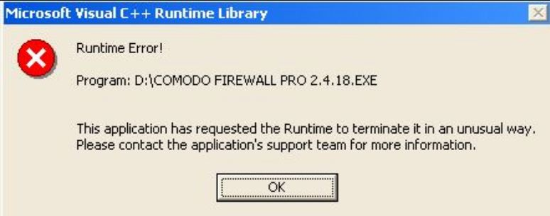

RunTime Error
Execution Error
An execution error occurs when a program is asked to do something that it cannot, resulting in a ‘crash’. The widely used example of a run time error is asking a program to divide by 0. The code contains no syntax or logic errors but when it runs it can't perform the task that it has been programmed to carry out.
Runtime errors occur during execution of the application, so such errors occur during the interpretation phase: Interpreted programming languages are directly executed by an interpreter, without altering or transforming the source code prior to execution. This process reads each statement one at a time, translating each into a sequence of instructions that have already been converted into machine code for rapid execution.
Tipology of RunTime Error
Memory Leak
A term used to describe a software issue that causes the computer or hardware device to lose resources that are no longer in use. A leak may be caused when a program does not close properly or by a bug. Commonly, the term leak is used to describe a memory leak, which is a software program that does not release memory resources, or retains information no longer being used. When a leak occurs, you will notice a drop in the performance of your computer or hardware device. For example, with a memory leak, the program may continue to consume the memory until it is exhausted or causes a crash. Microsoft Windows users can identify memory leaks by opening the Windows Task Manager; if a program's "mem usage" never stops increasing, it's likely that the program is exhibiting a memory leak.
Logic Error
If there is a program running poorly on your computer, it can affect other programs. In a Windows environment, many things are shared, and if a rogue application steps into your arena, there is a possibility for a runtime error to occur. Example of Logic Error float average(float a, float b) { return a + b / 2; /* should be (a + b) / 2 */ }

Peripherals
Software depends on the workability of peripherals in your computer. If the computer is old and since the HardDisk can "die" or if the cooling fan is not working, degradation in service can occur. Any of these events can cause your software to throw a runtime error.

Crashes
Referencing missing files
referencing missing files are those files can not be find since the path is wrong. Example : location.csv is not founded on User/Desktop/GroupProject. These bad references will bring to a crash of the program.
Dividing things by zero
We simply say that anything divided by 0 is not defined. Any function divided by 0 it can not be implement on the computer as well. It will result a crash of the program or even worst of the system
Giving the wrong input
If given a wrong input it will crash the sistem, since it's not able to compile the program.
| Runtime Errors on MacOS 
|
Runtime Errors on Windows 
|
Videogames 
|